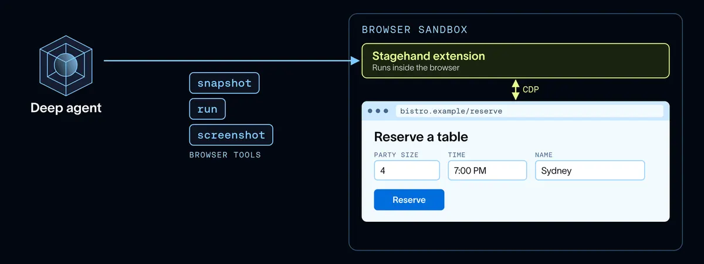

給 agent 一個瀏覽器：登入交還給人，工具為省 token 而生
導讀原文：LangChain Blog〈Browser Use in Managed Deep Agents〉——產品技術文章，含工具組設計與實測數字
訂票、退訂、申請理賠都發生在給人點的網頁上；LangChain 把遠端瀏覽器變成 Managed Deep Agents 的內建能力，登入交還給人、工具按省上下文調校。

工具組：一次送整段步驟，只回傳需要的
| 工具 | 做什麼 | 省下什麼 |
|---|---|---|
| snapshot | 讀頁面無障礙樹並編元素 ID | 不抓整頁 HTML |
| run | 接受程式碼，一次執行開頁、填欄、點擊、驗結果 | 多步驟一個呼叫完成，只回傳所需 |
| screenshot | 截圖，可存進沙箱 | 圖不進對話也能留證 |
| handoff | 把視窗交還給人（登入用） | 密碼不進模型訊息與 traces |
工具底層基於 Browserbase 開源 SDK Stagehand。LangChain 強調設計主軸是省 token：長任務快不快，取決於代理要不要把整頁塞進 context。
scope 決定登入記多久，handoff 處理例外
scope="thread"（預設）
每個對話一個瀏覽器，跨輪重用，但 cookie 不與其他對話共用。
scope="user"
每位登入者一個瀏覽器，登入狀態跨對話沿用——每個網站只需登入一次。
瀏覽器閒置 idle_ttl_seconds 預設 600 秒後停止，避免為沒人用的瀏覽器付費。
登入牆與雙因素驗證是瀏覽器代理最常卡死的地方。代理改呼叫 browser_handoff(reason)：LangSmith Studio 或 Slack 出現互動卡片，你登入後點 Hand back，代理確認後續作；連結 15 分鐘逾期。
實測：90% 通過率，比次便宜 9 倍
7 組受測工具集中最高通過率；數字為原文自測、無第三方驗證。
這組數字的主張不是「比較強」，而是同等通過率下便宜一個數量級——省 token 的工具設計直接反映在帳單上。
帶走三件事
瀏覽器是 agent 標配，不是外掛。日常網路任務多數沒有 API，會點網頁才接得上。
憑證不該進模型。handoff 把登入交還給人，密碼不落在訊息、traces 或模型供應商手裡。
省 token 是工具設計問題。一次執行整段步驟、只回傳所需，通過率不變而成本差 9 倍（原文自測）。
同一主題的其他館藏
導讀為本站編輯內容（AI 摘解自原文與館藏重點，非官方文件）；引述數據出自原文，圖解與小標為編輯整理（架構圖為原文圖、對照表為本站重排）。內容經對照原文的獨立事實審查後發布。